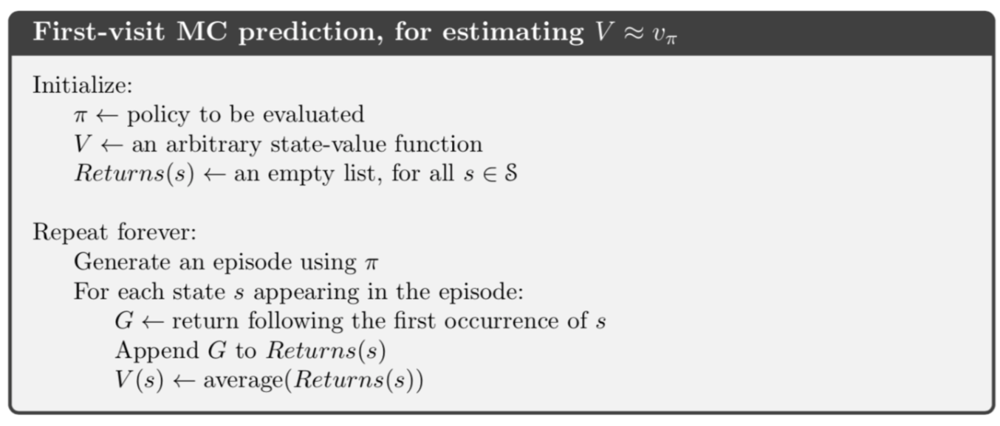
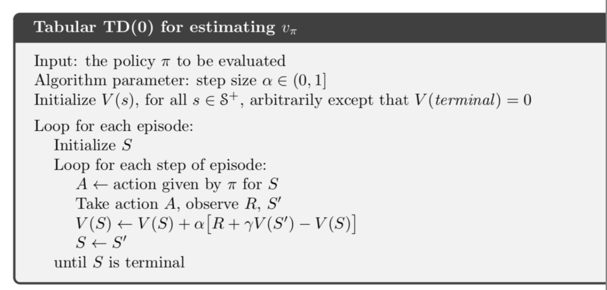
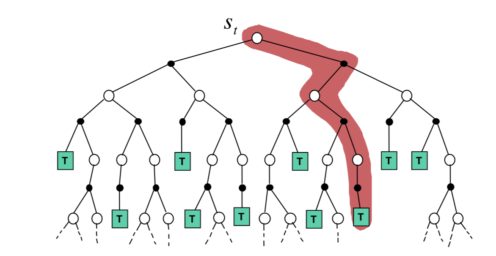
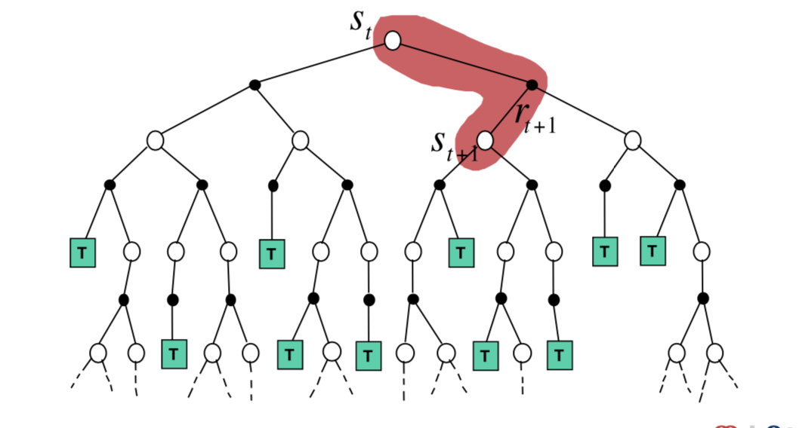
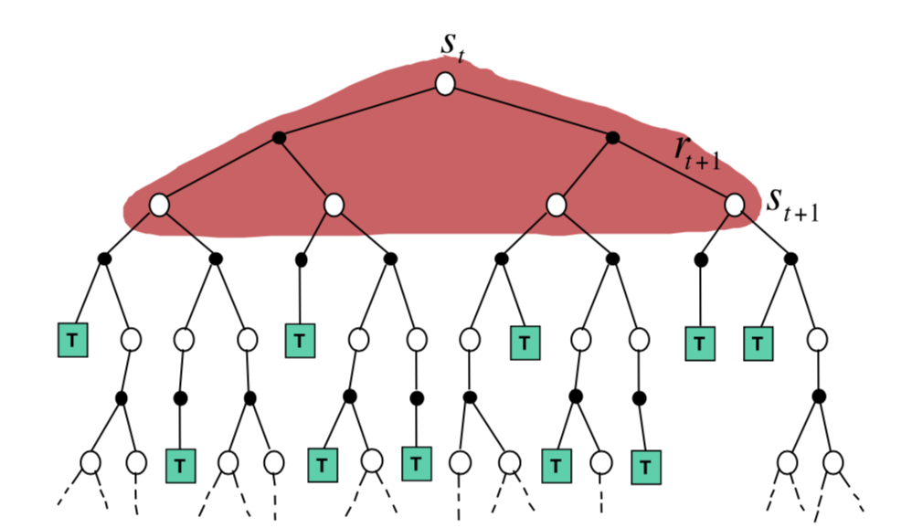

Model-free prediction (evaluation) is to estimate the value function of an unknown MDP, say $\langle S,A,P,R,\gamma \rangle$. And it includes the Monte-Carlo learning and temporal-difference learning methods.
Monte-Carlo Reinforcement learning
As a famous stochastic simulation method, MC methods plays an important role in a wide range of scientific problems. In reinforcement learning, MC-based methods learn directly from episodes of experience, say a whole observing trajectory.
- Model-free: have no prior knowledge of MDP transitions/ rewards.
- Value = average sample returns
- i.e., use arithmetic mean to replace the real expectation
- Requirement of applying MC: all episodes must terminate
Description
Goal: learn latent(real) value function $v_\pi$ from episodes of experience under policy $\pi$
Originally, the return at time $t$(also, state $s$) is the total discounted $\gamma$ rewards:
- $G_t = R_{t+1} + \dots + \gamma^{T-t-1}R_T$
And corresponding value function is the expected return:
Algorithm: First-visit MC policy evaluation
The MC algorithm for prediction is to evaluate each state $s$ given policy $\pi$. Here, the first-visit MC is introduced, which means we only take account of the first time-step $t$ that state $s$ is visit in some episode. We simply count the appearing times with its return $S(s)$, where we compute the return(adding dicounted rewards along the trajectory). Then estimate the value by $V(s) = S(s)/N(s)$. By law of large numbers,

Every-visit Monte-Carlo Policy Evaluation
Another way to consider is that every time-step t that state s is visited in an episode. We will also obtain the results.
Incremental Mean
If we rewrite the mean as :
Then the update form can be changed into:
$N(S_t) := N(S_t) + 1$
$V(S_t) := V(S_t) + {1\over N(S_t)}(G_t - V(S_t))$
which is the increment Monte-Carlo Updates.
In non-stationary problems, where episodes may not provide “consistent” information, it can be useful to track a runing mean, i.e. forget old episodes.
$V(S_t) := V(S_t) + \alpha (G_t - V(S_t))$
Temporal-Difference learning
- Model-free also
- Learning from incomplete episodes, by bootstrapping(update involving estimate)
- Updates a guess towards a guess!
The difference between TD and MC
Take Incremental every-visit MC for example,
We update value $V(S_t)$ toward actual return $G_t$ as :
In $TD(0)$ — simplest TD algorithm, we replace the $G_t$ with a guess:
where $R_{t+1}+\gamma V(S_{t+1})$ is called the TD target; $R_{t+1}+\gamma V(S_{t+1}) - V(S_t)$ is called the TD error.
And the rest of algorithm is similar.
Algorithm: TD(0) for estimating $v_\pi$

Remarks of TD
- return $G_t = R_{t+1} + \dots + \gamma^{T-t-1}R_T$ is unbiased estimate of $v_\pi(S_t)$
- true TD target (over $v_\pi$), $R_{t+1}+\gamma v_\pi(S_{t+1}$ is also unbiased estimate of $v_\pi(S_t)$
- whileTD target (over $v_\pi$), $R_{t+1}+\gamma v_\pi(S_{t+1}$ is also biased estimate
- TD target has much lower variance than the return
- however, TD target estimate has bias;
- MC has better convergence properties
Note that:
- MC is not very sensitive to initial value
- TD is more sensitive
Batch MC and TD
If we only have finite observation data, say $K$ episodes totally:
Then we can repeatedly sample episode $k\in [1,K]$ and apply MC or TD(0) to episode k. It still works good!
For certainty equivalence, we can prove that the batch MC or TD:
- MC converges to solution with minimum mean-squared error(MSE), and best fit to the observed returns:
- TD converges to solution of maximum likelihood Markov model, and solution to the MDP model $\langle S,A,P,R,\gamma \rangle$ best fits the observed data, say sequence.( common MLE )
Summary and comparison
Generally speaking, TD exploits Markov property (one-step determination) and usually more efficient in Markov env; while MC does not exploit and is usually used in non-Markov env.
Diagram explanation
- For Monte-Carlo: $V(S_t) := V(S_t) + \alpha (G_t - V(S_t))$

- For Temporal-Difference: $V(S_t) := V(S_t) + \alpha (R_{t+1}+\gamma V(S_{t+1}) - V(S_t))$

- Also, here is how Dynamic Programming algorithm works:

Reference: Teaching slides of Prof. David Silver at UCL